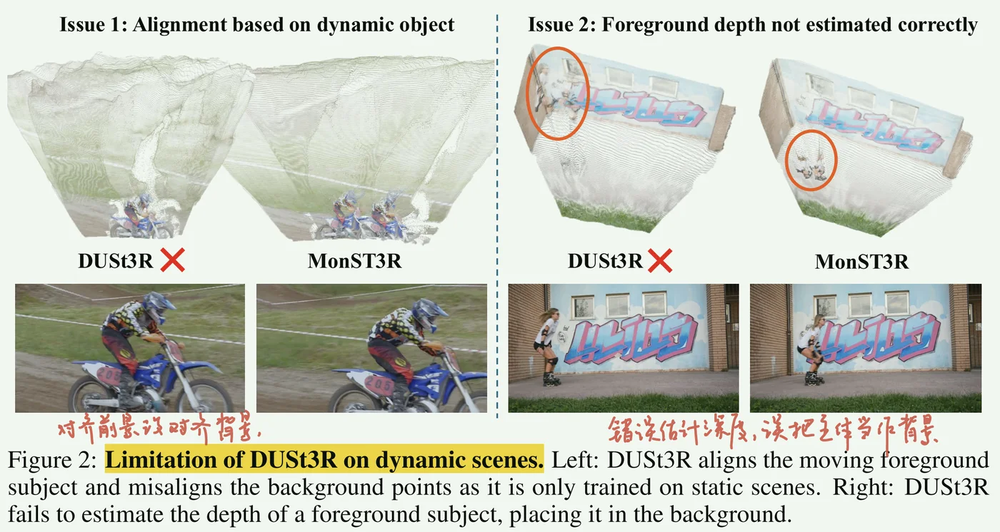

[[#pipeline]]
[[#1. 摘要、引言]]
[[#2. 相关工作]]
[[#3. 方法]]
- [[#下游应用]]
[[#4. 实验]]
[[#补充]]
- [[#1. 估计光流与相机诱导光流]]
==动态 pointmap==，逐帧相机内外参。
每一个时间步预测一个pointmap；
滑窗 + 全局优化 -> 把多帧结果统一到一个动态的全局点云；
窗口大小 \(w\) ,对窗口内的所有帧对回归 pointmap + pose；再通过光流比对得到高置信静态 mask，优化全局位姿；
对齐损失（\(\mathcal{L_{align}}\)），相机平滑损失（\(\mathcal L_{smooth}\)），光流投影损失（\(\mathcal L_{flow}\)）
trick: 一般来说 \(\mathcal L_{smooth}\) 的权重对位姿的 RPE 更敏感；\(\mathcal L_{flow}\) 的权重变化影响较小。
只在小训练集微调，也可以高效高质量。
MonST3R, geometry-first approach to estimate geometry from videos of dynamic scenes. A fine tuning work on several suitable training data, without an explicit motion representation.
Multi-stage methods such as Mosca, GFlow are usually slow, brittle and prone to error at each step.
Traditional SfM methods struggle with dynamic scenes with moving objects, which violate the epipolar constraint. Recent methods have explored joint estimation of depth, camera pose, and residual motion.
Monocular and video depth estimation. Recent works target zero-shot performance and with large scale training combined with synthetic datasets. Some methods suffer from flickering (static MDE or Chronodepth) and Video depth estimation (Depth Crafter) also lacks metric depth.
4D Reconstruction. Concurrent methods rely on pre-computed cues and test-time Gaussian optimization; MonST3R is feed-forward and can provide their initialization.

MonST3R 把 DUSt3R 的 pointmap 表示扩展到动态：对每个时间步都预测一个该时刻的 pointmap；训练用到带位姿与深度的序列做微调，通过少量、可信的数据进行几何优先学习。单图输入：input: t 时刻帧 \(I^t\) ，output： t 时刻图像恢复出来的点图 \(X^{t} \in \mathbb R ^{R \times W \times 3}\) 。
多图输入：input: \(t, t'\) 的图像，output: \(X^{t,t'\to t}, X^{t',t’ \to t}\) 。输出两个时刻的点图，表示利用两帧图像关联预测的点图。（多帧信息对应到t时刻相机坐标系，方便后期全局优化）
用四个大体量视频数据集微调动态场景，采样权重不相同。
- 真正起到作用的动态数据其实并不多。所以需要提升数据使用效果：
- 微调decoder + head （frozen encoder）
- 按照 stride 来构造 image pair, stride 越大采样概率越大
- FoV 增强（不同尺度中心裁剪模拟焦距变化）做好预防量
与DUSt3R的最大不同：每一个点图都与单个时间点对应。
下游应用
1. 内参与位姿估计
内参直接解焦距就可以了。
对于位姿估计，由于动态物体会导致多视图对齐（对极几何 / 本质矩阵等）的方法失效，所以采用 PnP + RANSAC 来求解位姿，绕开动态导致的错误匹配。
2. 高置信静态区域
诱导光流计算见（补充 1. 相机诱导光流）
Static mask \(S^{t \to t'} = [\alpha > ||\mathbf F^{t \to t'}_{cam} - \mathbf F^{t \to t'}_{est} ||_{\mathbf L1}]\)
3. 动态全局点云与位姿优化
（1）时间滑窗
选择大小为 \(w\) 的窗口，对窗口中的所有挑选出来的 image pair 都计算 pointmap，同时进行 strided sampling 来跨步挑选帧对，保证连通性且降低复杂度。
Strided Sampling：从滑窗中抽两帧作为训练对，时间间隔从 1 到 9 随机取，大的stride 概率高。在一个滑窗内不对所有 image pair 都建图，而是按时间间隔子采样，对部分 image pair 建图，压低原始时间复杂度 \(O(N^2)\) .
Q: 为什么 stride sampling 仍然能保持连通性？
A: 视频图：每一帧认为是一个节点，全局对齐依赖图连通。连通原因：滑窗本身重叠，只要滑窗中保留相邻边就可以穿起来；长边只删除冗余不删减框架，不会删除相邻的骨架边。==全局仍然是连通链。==
（2）重参数化
\[ X^{t}_{i,j}=(P^t)^{-1}h\big(K_t^{-1}[i*D^{t}_{i,j},j*D^{t}_{i,j},D^{t}_{i,j}]^\top\big) \]
像素 - 通过深度回到世界坐标 - 反投影到相机平面 - 可选齐次坐标 - 逆变换到世界坐标系，把优化变量变成物理可解释的 (\({R,T,K,D}\))。
（3）损失函数
$$ \mathcal L_{\text{align}}(X,\sigma,P_W)
=\sum_{W^i\in\mathcal W}\sum_{e\in W^i}\sum_{t\in e}
\big|,C^{t;e}\cdot\big(X^t-\sigma^e,P^{t;e}X^{t;e}\big) $$
- 每条边给出“局部几何”，通过 \((P^{t;e},\sigma^e)\) 拉到全局，与当前全局 (\(X^t\)) 对齐，置信高的像素贡献更大。
$$ \mathcal L_{\text{smooth}}(X)
=\sum_{t=0}^{N}\Big(||R_t^\top R_{t+1}-I|_F + |T^{t+1}-T^t||_2 \Big) $$
- 真实相机轨迹在短时间内应平滑。
$$ \mathcal L_{\text{flow}}(X)
=\sum_{W^i\in\mathcal W}\sum_{t\rightarrow t'\in W^i}
\big|\big|S^{\text{global};,t\rightarrow t'}
\cdot\big(F^{\text{global};,t\rightarrow t'}{\text{cam}}-F^{,t\rightarrow t'}{\text{est}}\big)\big|\big|_1 $$
- 把 几何/位姿 优化和观测的像素运动关联，但只在静态像素生效，既利用运动信息还不被动态干扰。
==全局优化目标==
$$ \hat X
=\arg\min_{X,,P_W,,\sigma}
\ \ \mathcal L_{\text{align}}(X,\sigma,P_W)
+w_{\text{smooth}},\mathcal L_{\text{smooth}}(X)
+w_{\text{flow}},\mathcal L_{\text{flow}}(X). $$
==待优化：== 全局参数 (X)(\({P^t,K^t,D^t}\))，每边刚体变换 (\(P_W={P^{t;e}}\))、每边尺度 (\(\sigma={\sigma^e}\))。可以得到全局一致的 pointmap 和 pose，同时天然时间一致的深度。
训练：在 DUSt3R decoder + DPT heads 上微调 25 epoch；每 epoch 采样 20k 帧对，AdamW, lr=5e-5，mini batch=4/GPU，2×RTX6000 48GB 约 1 天能跑完。
推理（pairwise 前馈）：60 帧视频、w=9、stride=2（≈600对）约 30 s。
全局优化：权重 (\(w_{\text{smooth}}=0.01\))，(\(w_{\text{flow}}=0.01\))。
当平均 flow loss < 20（姿态大致对齐）启用 \(\mathcal L_{\text{flow}}\) ；若像素级 flow loss > 50 在优化中**更新运动 mask。
1. 估计光流与相机诱导光流
估计光流：两帧之间由现成的光流算法估计的像素位移场，参考流（\(F^{\text{est}}_{t\rightarrow t’}\)），用来和几何诱导光流对比，判定静态区。
诱导光流：相机运动和场景几何决定的光流。给定深度（来自 pointmap）、内外参，把像素在 \(t\) 时刻反投影，经由 \(t\!\to\!t’\) 的相机变换 \((R_{t\rightarrow t’},T_{t\rightarrow t’})\) 投到 \(t'\) 的图像，再减去原像素位置，就得到几何诱导光流 \(F^{\text{cam}}_{t\rightarrow t’}=\pi\!\big(D^{t’}{t;t}\,K_{t’}R_{t\rightarrow t’}K_t^{-1}\hat x+K_{t’}T_{t\rightarrow t’}\big)-x,\)。